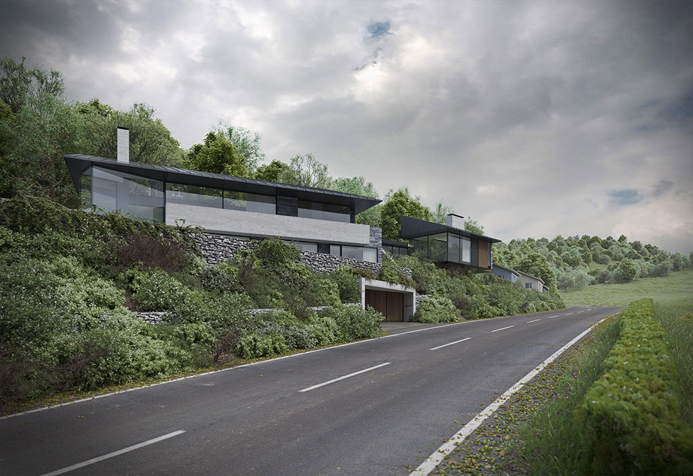

Sŵn-Y-Môr
The houses appear as individual elements but are connected by a two storey undercroft, for parking, storage and interconnected living spaces. The dwellings are also united by a communal private courtyard to the rear.
The architecture explores the predictability of the Welsh climate and responds to this with overhangs and cantilevers, providing protection within a series of dynamic forms. The architecture therefore becomes an expression of the environment, providing physical and emotional shelter.
See more

Picket-Mead house
The warm material palette at ground floor is predominantly Limestone, timber and glass. Low profile mono-pitch roofs have been introduced to the first floor volumes, reminiscent of the subservient language of agricultural outbuildings; creating a respectful language to the exiting manor house.
The architectural language of the homes has been inspired by practice research into local vernacular typologies found within the conservation area and the wider rural landscape beyond.
See more

Timber-Yard house
Vertical oriel window bays are a key element of the design, introduced to the main facade to re-orientate views towards the main public realm. These oriel’s also help shield the occupants of the existing terrace houses opposite form the main living spaces within the proposed apartments; overcoming a key concern of the planning department.
The project will achieve 3+ code for sustainable homes rating with an enhanced thermal envelope design approach, minimising the requirement for any additional bolt on sustainable technologies.
See more